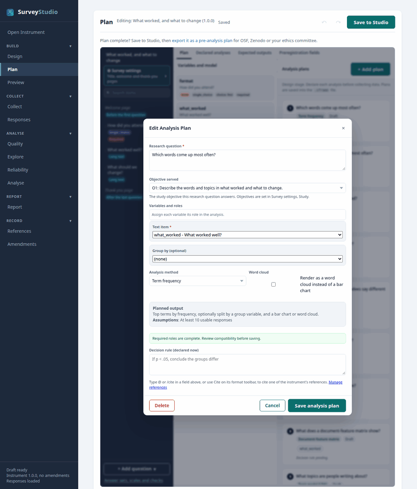
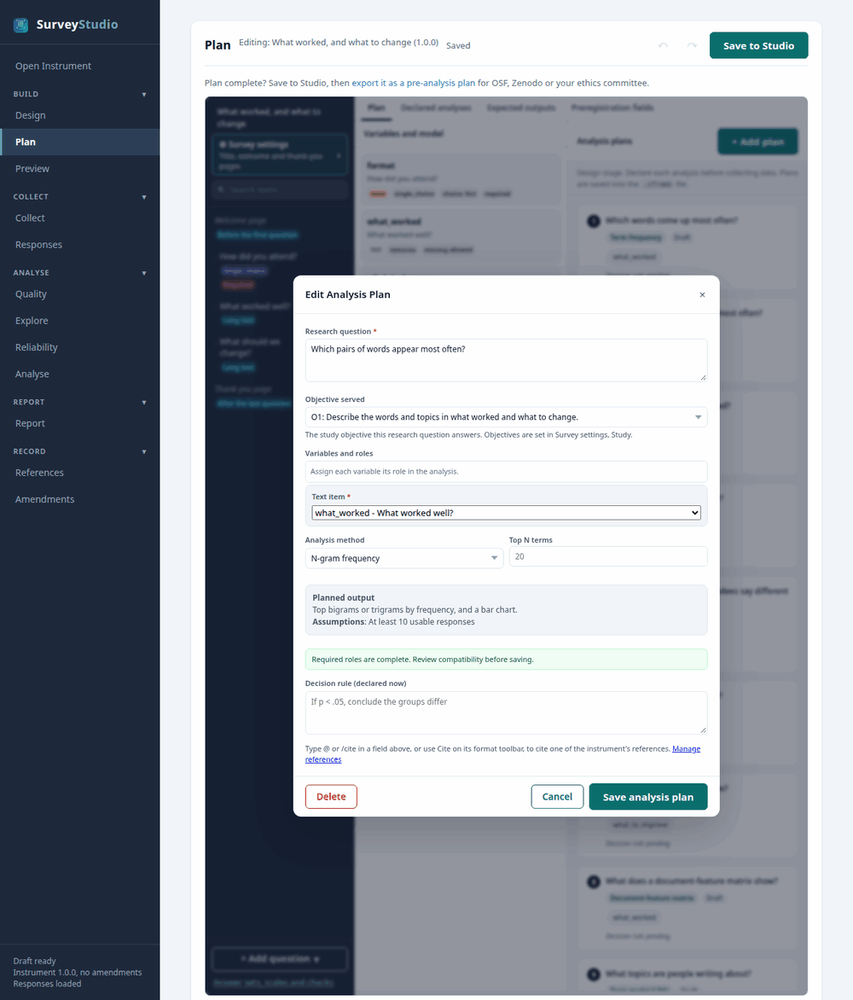
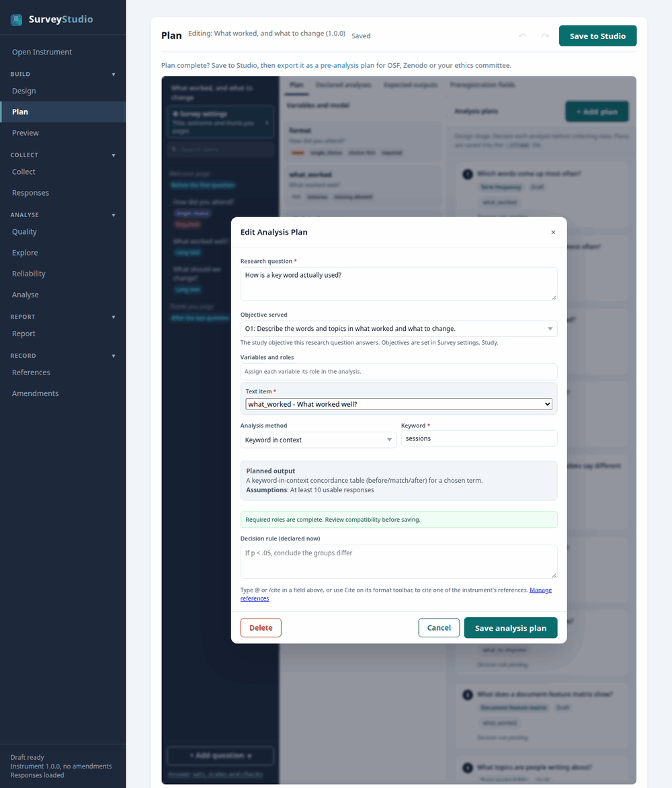
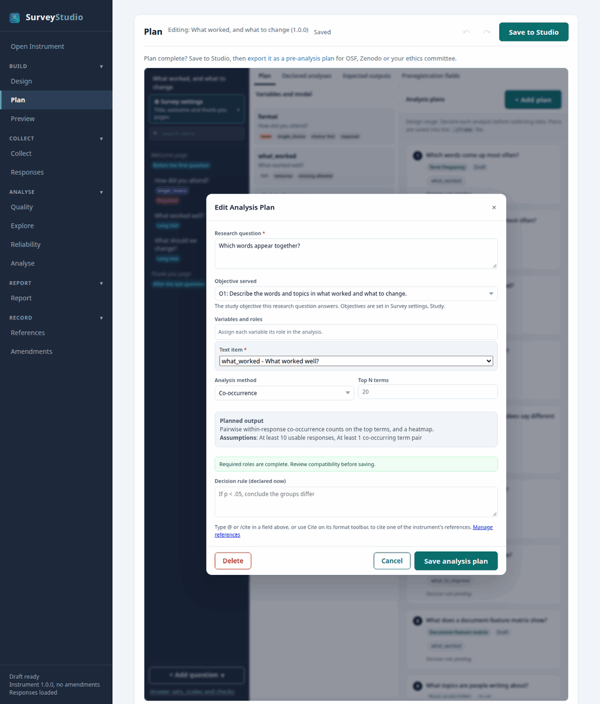
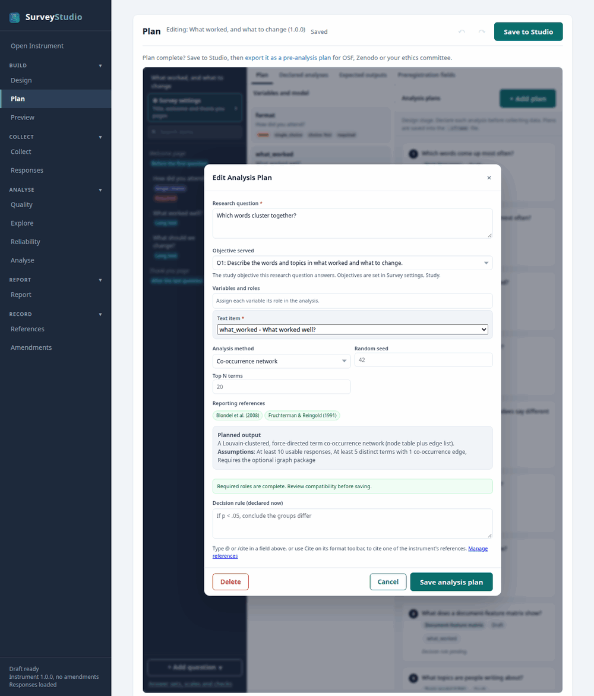
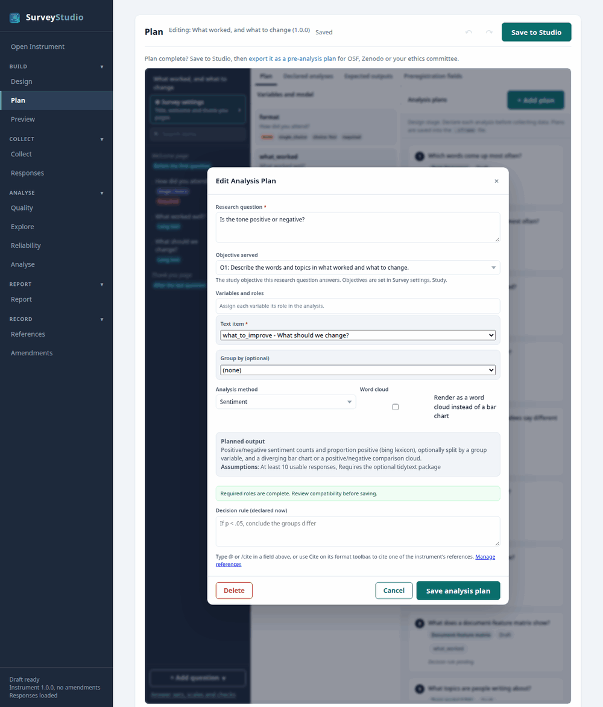
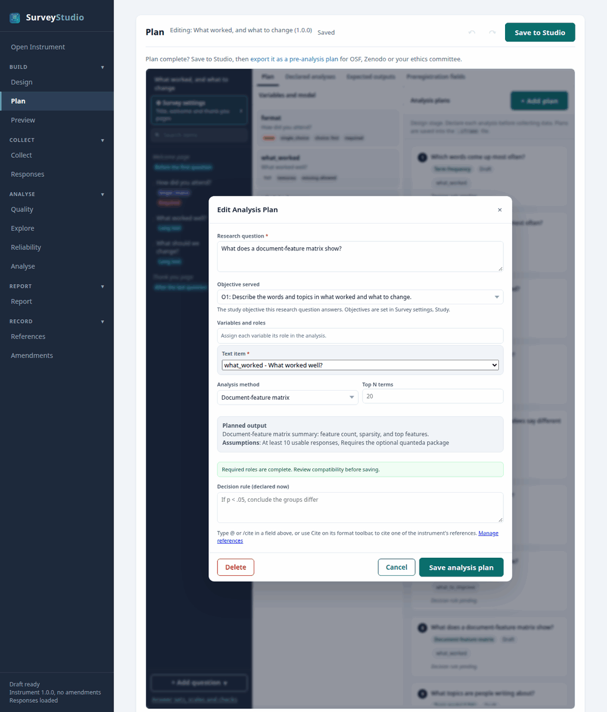
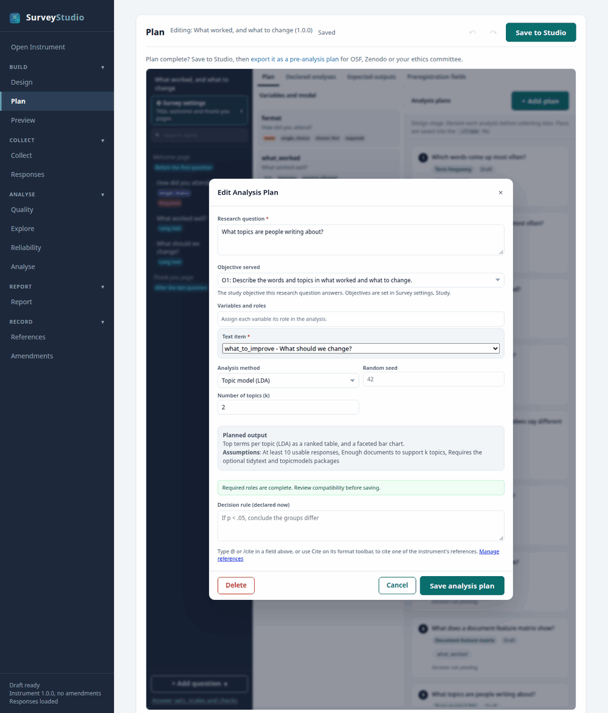

These methods find the words, phrases, contexts, tones and topics in open answers.
Assumptions. Use enough text per answer for the method. Topic models need many answers.
In SurveyStudio, open Plan on the Design screen, add a research question and choose the method. Set the text question. A comparison of groups takes a grouping variable, and keyword in context a key word. Declare the hypotheses and the decision rule before collecting responses.
Word frequencies

open_text demo.In the pre-analysis plan:
RQ1. Which words come up most often?
In the report: the APA 7 sentence and a table, with a chart where the method has one, each titled with the research question.
Phrase frequencies

open_text demo.In the pre-analysis plan:
RQ2. Which pairs of words appear most often?
In the report: the APA 7 sentence and a table, with a chart where the method has one, each titled with the research question.
Words in context

open_text demo.In the pre-analysis plan:
RQ3. How is a key word actually used?
In the report: the APA 7 sentence and a table, with a chart where the method has one, each titled with the research question.
Word co-occurrence

open_text demo.In the pre-analysis plan:
RQ4. Which words appear together?
In the report: the APA 7 sentence and a table, with a chart where the method has one, each titled with the research question.
Word co-occurrence network

open_text demo.In the pre-analysis plan:
RQ6. Which words cluster together?
In the report: the APA 7 sentence and a table, with a chart where the method has one, each titled with the research question.
References: Blondel, V. D., Guillaume, J.-L., Lambiotte, R., & Lefebvre, E. (2008). Fast unfolding of communities in large networks. Journal of Statistical Mechanics: Theory and Experiment, 2008(10), P10008. https://doi.org/10.1088/1742-5468/2008/10/P10008 Fruchterman, T. M. J., & Reingold, E. M. (1991). Graph drawing by force-directed placement. Software: Practice and Experience, 21(11), 1129-1164. https://doi.org/10.1002/spe.4380211102
Sentiment analysis

open_text demo.In the pre-analysis plan:
RQ7. Is the tone positive or negative?
In the report: the APA 7 sentence and a table, with a chart where the method has one, each titled with the research question.
Document-feature matrix

open_text demo.In the pre-analysis plan:
RQ8. What does a document-feature matrix show?
In the report: the APA 7 sentence and a table, with a chart where the method has one, each titled with the research question.
Topic model (LDA)

open_text demo.In the pre-analysis plan:
RQ9. What topics are people writing about?
In the report: the APA 7 sentence and a table, with a chart where the method has one, each titled with the research question.
Structural topic model
open_text demo.In the pre-analysis plan:
RQ10. What topics appear according to a structural topic model?
In the report: the APA 7 sentence and a table, with a chart where the method has one, each titled with the research question.